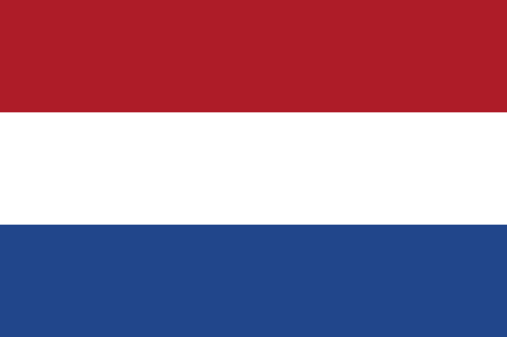

.png)
Democratie is een politiek systeem waarin de macht bij het volk ligt. In een democratie hebben burgers de mogelijkheid om invloed uit te oefenen op het beleid en de leiders die hen vertegenwoordigen. Er zijn verschillende vormen van democratie, maar de meest voorkomende is de representatieve democratie, waarbij burgers hun vertegenwoordigers kiezen via verkiezingen.
Kenmerken van een democratie zijn onder andere:
Vrije en eerlijke verkiezingen: Burgers hebben het recht om hun leiders te kiezen zonder manipulatie of dwang.
Meerderheidsregel: De besluiten worden genomen op basis van de voorkeuren van de meerderheid, maar met respect voor de rechten van minderheden.
Scheiding der machten: De overheid is verdeeld in verschillende takken (wetgevend, uitvoerend, en rechterlijk), zodat geen enkele macht te veel controle heeft.
Rechten en vrijheden: In een democratie worden de fundamentele mensenrechten van burgers gewaarborgd, zoals vrijheid van meningsuiting, persvrijheid en recht op een eerlijk proces.
Verantwoordelijkheid en transparantie: De overheid moet verantwoording afleggen aan de burgers over haar acties en beslissingen.
Democratie bevordert actieve deelname van burgers en zorgt ervoor dat de politieke macht verdeeld is, zodat geen enkele persoon of groep te veel macht krijgt. Het biedt een manier om conflicten op vreedzame wijze op te lossen en houdt rekening met de diversiteit van de samenleving.
Samengevat: een democratie is een politiek systeem dat streeft naar een eerlijke verdeling van macht en het waarborgen van de rechten van burgers, terwijl het hen de mogelijkheid geeft om actief deel te nemen aan het bestuur van hun land.

De Nederlandse democratie is een parlementaire democratie, waarin het volk via gekozen vertegenwoordigers invloed uitoefent. Het parlement bestaat uit de Tweede Kamer (150 leden, rechtstreeks gekozen)
en de Eerste Kamer (75 leden, indirect gekozen). De regering wordt geleid door de minister-president en bestaat uit ministers die het beleid uitvoeren.
Nederland kent een meerderheidsstelsel, waarbij coalities vaak nodig zijn voor een meerderheid.
Kenmerken van de democratie zijn vrije verkiezingen, scheiding der machten, en de bescherming van fundamentele rechten zoals vrijheid van meningsuiting en persvrijheid.
Burgers hebben het recht om te stemmen en politieke partijen te vormen.
Samengevat streeft de Nederlandse democratie naar gelijke vertegenwoordiging en een eerlijke verdeling van macht.
De Belgische democratie is een parlementaire constitutionele monarchie, wat betekent dat België een koning heeft,
maar dat de macht bij het volk en de verkozen vertegenwoordigers ligt.
Het politieke systeem is gebaseerd op de scheiding der machten: de wetgevende, uitvoerende en rechterlijke macht functioneren onafhankelijk van elkaar.
Kenmerken van de Belgische democratie:
Federale staat: België is verdeeld in drie gewesten (Vlaanderen, Wallonië en Brussel) en drie gemeenschappen (Nederlandstalige, Franstalige en Duitstalige gemeenschap), elk met eigen bevoegdheden.
Verkiezingen: Om de vijf jaar worden federale, regionale en Europese verkiezingen gehouden. Gemeentelijke en provinciale verkiezingen vinden om de zes jaar plaats. Stemrecht is verplicht voor Belgische burgers.
Meerpartijenstelsel: België heeft een diverse politieke landschap met meerdere partijen die samenwerken in coalities, omdat geen enkele partij alleen kan regeren.
Koning als staatshoofd: De koning heeft vooral een ceremoniële rol en vertegenwoordigt het land, maar speelt ook een bemiddelende rol bij regeringsvorming.
Rechtsstaat en grondwet: België heeft een grondwet die de rechten en vrijheden van burgers garandeert en waarin de basisprincipes van de democratie zijn vastgelegd.
Door de complexe structuur, met meerdere regeringen en bevoegdheidsniveaus, vergt de Belgische democratie vaak langdurige onderhandelingen om politieke akkoorden te bereiken.